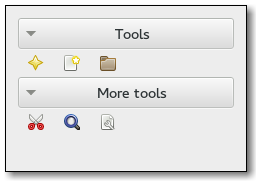

Gtk.ToolPalette¶
Example¶

- Subclasses:
None
Methods¶
- Inherited:
Gtk.Container (35), Gtk.Widget (278), GObject.Object (37), Gtk.Buildable (10), Gtk.Orientable (2), Gtk.Scrollable (9)
- Structs:
Gtk.ContainerClass (5), Gtk.WidgetClass (12), GObject.ObjectClass (5)
class |
|
class |
|
class |
|
|
|
|
|
|
|
|
|
|
|
|
|
|
|
|
|
|
|
|
|
|
|
|
|
|
|
|
|
|
Virtual Methods¶
Properties¶
- Inherited:
Gtk.Container (3), Gtk.Widget (39), Gtk.Orientable (1), Gtk.Scrollable (4)
Name |
Type |
Flags |
Short Description |
|---|---|---|---|
r/w/en |
Size of icons in this tool palette |
||
r/w/en |
Whether the icon-size property has been set |
||
r/w/en |
Style of items in the tool palette |
Child Properties¶
Name |
Type |
Default |
Flags |
Short Description |
|---|---|---|---|---|
|
r/w |
Whether the item group should be the only expanded at a given time |
||
|
r/w |
Whether the item group should receive extra space when the palette grows |
Style Properties¶
- Inherited:
Signals¶
- Inherited:
Fields¶
- Inherited:
Name |
Type |
Access |
Description |
|---|---|---|---|
parent_instance |
r |
Class Details¶
- class Gtk.ToolPalette(**kwargs)¶
- Bases:
- Abstract:
No
- Structure:
A
Gtk.ToolPaletteallows you to addGtk.ToolItemsto a palette-like container with different categories and drag and drop support.A
Gtk.ToolPaletteis created with a call toGtk.ToolPalette.new().Gtk.ToolItemscannot be added directly to aGtk.ToolPalette- instead they are added to aGtk.ToolItemGroupwhich can than be added to aGtk.ToolPalette. To add aGtk.ToolItemGroupto aGtk.ToolPalette, useGtk.Container.add().GtkWidget *palette, *group; GtkToolItem *item; palette = gtk_tool_palette_new (); group = gtk_tool_item_group_new (_("Test Category")); gtk_container_add (GTK_CONTAINER (palette), group); item = gtk_tool_button_new (NULL, _("_Open")); gtk_tool_button_set_icon_name (GTK_TOOL_BUTTON (item), "document-open"); gtk_tool_item_group_insert (GTK_TOOL_ITEM_GROUP (group), item, -1);
The easiest way to use drag and drop with
Gtk.ToolPaletteis to callGtk.ToolPalette.add_drag_dest() with the desired drag source palette and the desired drag target widget. ThenGtk.ToolPalette.get_drag_item() can be used to get the dragged item in theGtk.Widget::drag-data-receivedsignal handler of the drag target.static void passive_canvas_drag_data_received (GtkWidget *widget, GdkDragContext *context, gint x, gint y, GtkSelectionData *selection, guint info, guint time, gpointer data) { GtkWidget *palette; GtkWidget *item; // Get the dragged item palette = gtk_widget_get_ancestor (gtk_drag_get_source_widget (context), GTK_TYPE_TOOL_PALETTE); if (palette != NULL) item = gtk_tool_palette_get_drag_item (GTK_TOOL_PALETTE (palette), selection); // Do something with item } GtkWidget *target, palette; palette = gtk_tool_palette_new (); target = gtk_drawing_area_new (); g_signal_connect (G_OBJECT (target), "drag-data-received", G_CALLBACK (passive_canvas_drag_data_received), NULL); gtk_tool_palette_add_drag_dest (GTK_TOOL_PALETTE (palette), target, GTK_DEST_DEFAULT_ALL, GTK_TOOL_PALETTE_DRAG_ITEMS, GDK_ACTION_COPY);
- CSS nodes
Gtk.ToolPalettehas a single CSS node named toolpalette.New in version 2.20.
- classmethod get_drag_target_group()[source]¶
- Returns:
the
Gtk.TargetEntryfor a dragged group- Return type:
Get the target entry for a dragged
Gtk.ToolItemGroup.New in version 2.20.
- classmethod get_drag_target_item()[source]¶
- Returns:
the
Gtk.TargetEntryfor a dragged item.- Return type:
Gets the target entry for a dragged
Gtk.ToolItem.New in version 2.20.
- classmethod new()[source]¶
- Returns:
a new
Gtk.ToolPalette- Return type:
Creates a new tool palette.
New in version 2.20.
- add_drag_dest(widget, flags, targets, actions)[source]¶
- Parameters:
widget (
Gtk.Widget) – aGtk.Widgetwhich should be a drag destination for selfflags (
Gtk.DestDefaults) – the flags that specify what actions GTK+ should take for drops on that widgettargets (
Gtk.ToolPaletteDragTargets) – theGtk.ToolPaletteDragTargetswhich the widget should supportactions (
Gdk.DragAction) – theGdk.DragActionswhich the widget should suppport
Sets self as drag source (see
Gtk.ToolPalette.set_drag_source()) and sets widget as a drag destination for drags from self. SeeGtk.Widget.drag_dest_set().New in version 2.20.
- get_drag_item(selection)[source]¶
- Parameters:
selection (
Gtk.SelectionData) – aGtk.SelectionData- Returns:
the dragged item in selection
- Return type:
Get the dragged item from the selection. This could be a
Gtk.ToolItemor aGtk.ToolItemGroup.New in version 2.20.
- get_drop_group(x, y)[source]¶
- Parameters:
- Returns:
the
Gtk.ToolItemGroupat position orNoneif there is no such group- Return type:
Gets the group at position (x, y).
New in version 2.20.
- get_drop_item(x, y)[source]¶
- Parameters:
- Returns:
the
Gtk.ToolItemat position orNoneif there is no such item- Return type:
Gtk.ToolItemorNone
Gets the item at position (x, y). See
Gtk.ToolPalette.get_drop_group().New in version 2.20.
- get_exclusive(group)[source]¶
- Parameters:
group (
Gtk.ToolItemGroup) – aGtk.ToolItemGroupwhich is a child of palette- Returns:
Trueif group is exclusive- Return type:
Gets whether group is exclusive or not. See
Gtk.ToolPalette.set_exclusive().New in version 2.20.
- get_expand(group)[source]¶
- Parameters:
group (
Gtk.ToolItemGroup) – aGtk.ToolItemGroupwhich is a child of palette- Returns:
- Return type:
Gets whether group should be given extra space. See
Gtk.ToolPalette.set_expand().New in version 2.20.
- get_group_position(group)[source]¶
- Parameters:
group (
Gtk.ToolItemGroup) – aGtk.ToolItemGroup- Returns:
the index of group or -1 if group is not a child of self
- Return type:
Gets the position of group in self as index. See
Gtk.ToolPalette.set_group_position().New in version 2.20.
- get_hadjustment()[source]¶
- Returns:
the horizontal adjustment of self
- Return type:
Gets the horizontal adjustment of the tool palette.
New in version 2.20.
Deprecated since version 3.0: Use
Gtk.Scrollable.get_hadjustment()
- get_icon_size()[source]¶
- Returns:
the
Gtk.IconSizeof icons in the tool palette- Return type:
Gets the size of icons in the tool palette. See
Gtk.ToolPalette.set_icon_size().New in version 2.20.
- get_style()[source]¶
- Returns:
the
Gtk.ToolbarStyleof items in the tool palette.- Return type:
Gets the style (icons, text or both) of items in the tool palette.
New in version 2.20.
- get_vadjustment()[source]¶
- Returns:
the vertical adjustment of self
- Return type:
Gets the vertical adjustment of the tool palette.
New in version 2.20.
Deprecated since version 3.0: Use
Gtk.Scrollable.get_vadjustment()
- set_drag_source(targets)[source]¶
- Parameters:
targets (
Gtk.ToolPaletteDragTargets) – theGtk.ToolPaletteDragTargetswhich the widget should support
Sets the tool palette as a drag source. Enables all groups and items in the tool palette as drag sources on button 1 and button 3 press with copy and move actions. See
Gtk.Widget.drag_source_set().New in version 2.20.
- set_exclusive(group, exclusive)[source]¶
- Parameters:
group (
Gtk.ToolItemGroup) – aGtk.ToolItemGroupwhich is a child of paletteexclusive (
bool) – whether the group should be exclusive or not
Sets whether the group should be exclusive or not. If an exclusive group is expanded all other groups are collapsed.
New in version 2.20.
- set_expand(group, expand)[source]¶
- Parameters:
group (
Gtk.ToolItemGroup) – aGtk.ToolItemGroupwhich is a child of paletteexpand (
bool) – whether the group should be given extra space
Sets whether the group should be given extra space.
New in version 2.20.
- set_group_position(group, position)[source]¶
- Parameters:
group (
Gtk.ToolItemGroup) – aGtk.ToolItemGroupwhich is a child of paletteposition (
int) – a new index for group
Sets the position of the group as an index of the tool palette. If position is 0 the group will become the first child, if position is -1 it will become the last child.
New in version 2.20.
- set_icon_size(icon_size)[source]¶
- Parameters:
icon_size (
int) – theGtk.IconSizethat icons in the tool palette shall have
Sets the size of icons in the tool palette.
New in version 2.20.
- set_style(style)[source]¶
- Parameters:
style (
Gtk.ToolbarStyle) – theGtk.ToolbarStylethat items in the tool palette shall have
Sets the style (text, icons or both) of items in the tool palette.
New in version 2.20.
- unset_icon_size()[source]¶
Unsets the tool palette icon size set with
Gtk.ToolPalette.set_icon_size(), so that user preferences will be used to determine the icon size.New in version 2.20.
- unset_style()[source]¶
Unsets a toolbar style set with
Gtk.ToolPalette.set_style(), so that user preferences will be used to determine the toolbar style.New in version 2.20.
Property Details¶
- Gtk.ToolPalette.props.icon_size¶
- Name:
icon-size- Type:
- Default Value:
- Flags:
The size of the icons in a tool palette. When this property is set, it overrides the default setting.
This should only be used for special-purpose tool palettes, normal application tool palettes should respect the user preferences for the size of icons.
New in version 2.20.
- Gtk.ToolPalette.props.icon_size_set¶
- Name:
icon-size-set- Type:
- Default Value:
- Flags:
Is
Trueif theGtk.ToolPalette:icon-sizeproperty has been set.New in version 2.20.
- Gtk.ToolPalette.props.toolbar_style¶
- Name:
toolbar-style- Type:
- Default Value:
- Flags:
The style of items in the tool palette.
New in version 2.20.